Альбомы группы
Наш дебютный альбом KISS (1974)
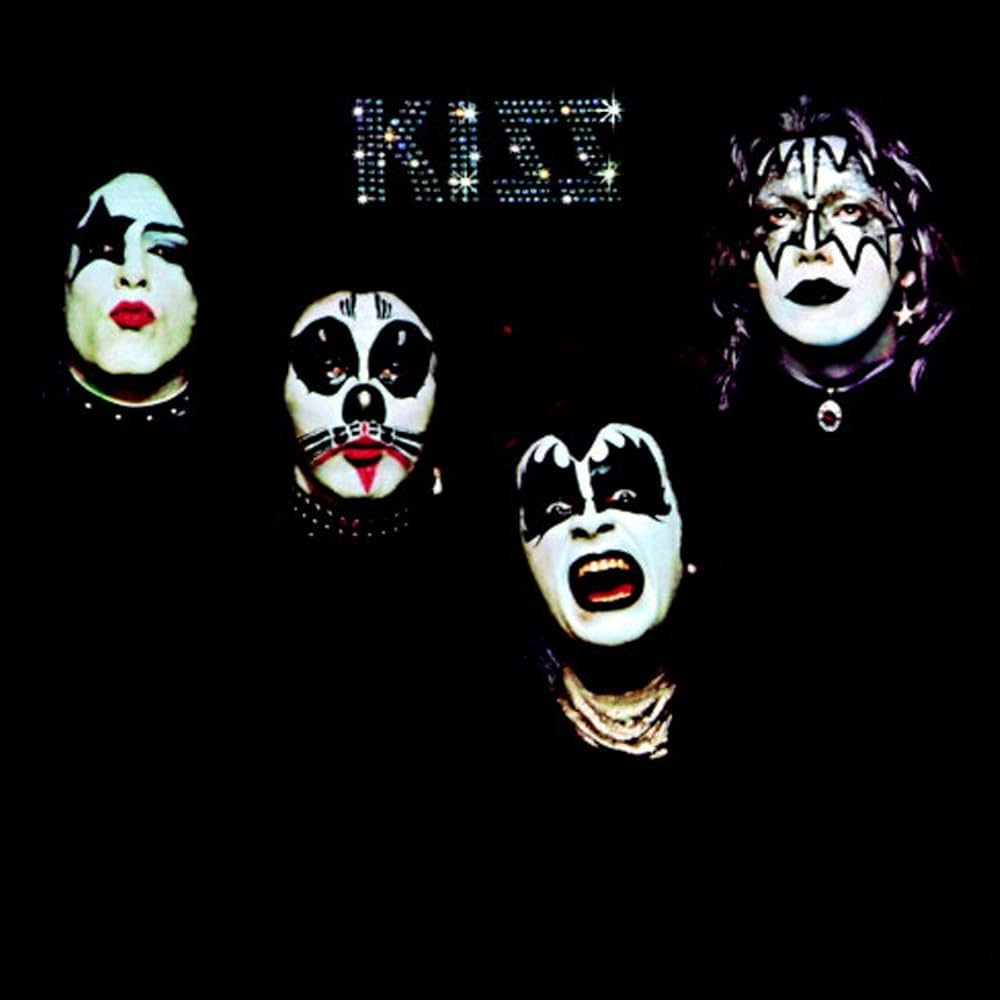представил миру наши первые песни — Strutter, Deuce, Black Diamond. Мы были новой группой с большим стремлением и мощной энергией, и этот релиз стал нашим стартом.
Hotter Than Hell (1974)
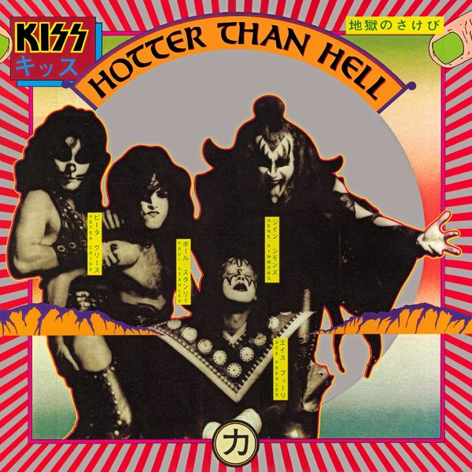показал более тяжёлое и тёмное звучание. Мы много экспериментировали и искали свой стиль. Песни Parasite и Let Me Go, Rock ’n’ Roll стали основой наших ранних концертов.
Dressed to Kill (1975)
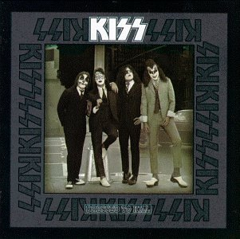стал шагом к тому, чтобы вывести нас на новый уровень. Именно здесь появилась Rock and Roll All Nite, композиция, которая вскоре стала нашим гимном и важной частью каждого шоу.
Destroyer (1976)

Мы сделали шаг к более масштабному и продуманному продакшену. Песни Detroit Rock City и Beth открыли нас широкой аудитории.
Rock and Roll Over (1976)
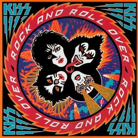Вернулись к более живому и прямому звучанию, сосредоточившись на энергии, которая близка нашему сценическому стилю.
Love Gun (1977)
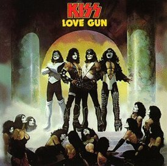Альбом стал очередной вехой: мы усилили фирменный хард-рок и закрепили наши концертные стандарты.
Dynasty (1979)
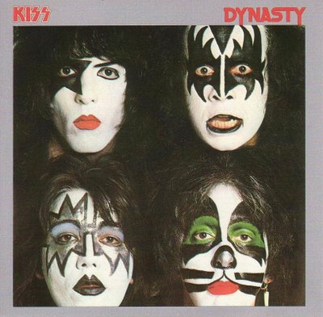Мы экспериментировали с более лёгкими и танцевальными элементами. I Was Made for Lovin’ You стала одним из наших крупнейших хитов.
Unmasked (1980)
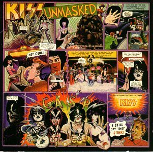Продолжили движение в более мелодичное и современное звучание того времени.
Music from “The Elder” (1981)
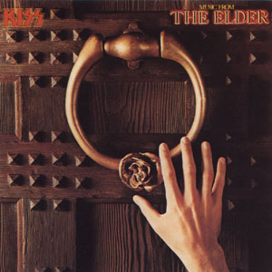Необычный для нас концептуальный альбом. Он стал шагом в сторону драматичности и фантазийной тематики.
Creatures of the Night (1982)

Мы вернулись к мощному и тяжёлому звучанию. Этот альбом вновь подчеркнул нашу сторону хард-рока.
Lick It Up (1983)
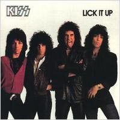Мы впервые появились без грима. Альбом отметил новый этап и получил высокую оценку за более современный и жёсткий стиль.
Animalize (1984)

Мы продолжили двигаться в агрессивном направлении 80-х, сочетая скорость, яркость и харизму.
Asylum (1985)
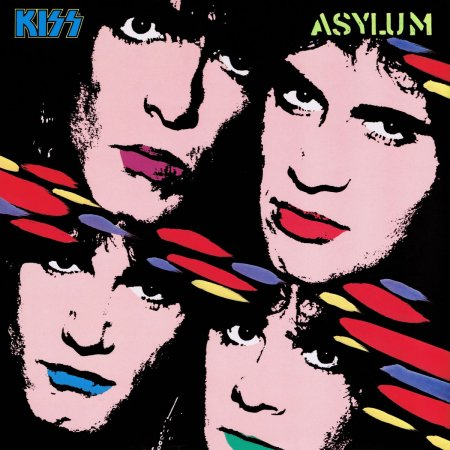Сохранили динамику периода, добавив более мелодичные элементы.
Crazy Nights (1987)
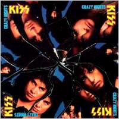Сделали акцент на ярком, крупном саунде эпохи, с более лёгкими и стремительными мелодиями.
Hot in the Shade (1989)
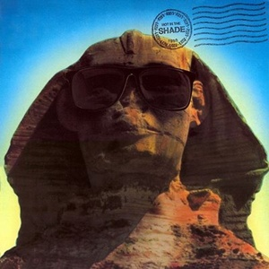Вернулись к более прямому рок-звучанию. Альбом стал шагом к обновлению перед новым десятилетием.
Revenge (1992)
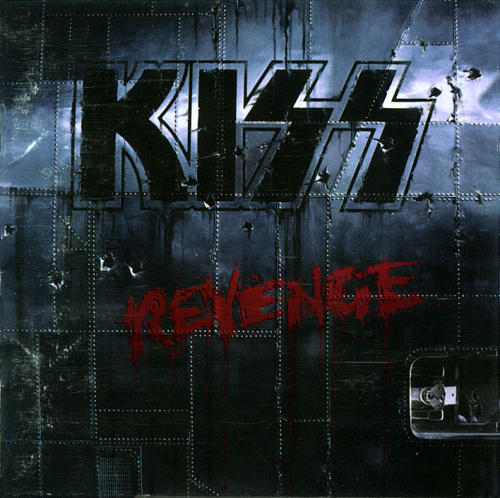Мы вновь усилили тяжесть и серьёзность в музыке. Альбом получил сильный отклик и стал одним из заметных работ 90-х.
Carnival of Souls (1997)
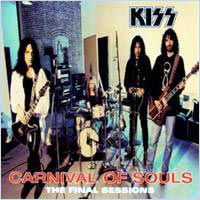Записан в более экспериментальном, мрачном стиле, отражая тенденции эпохи.
Psycho Circus (1998)
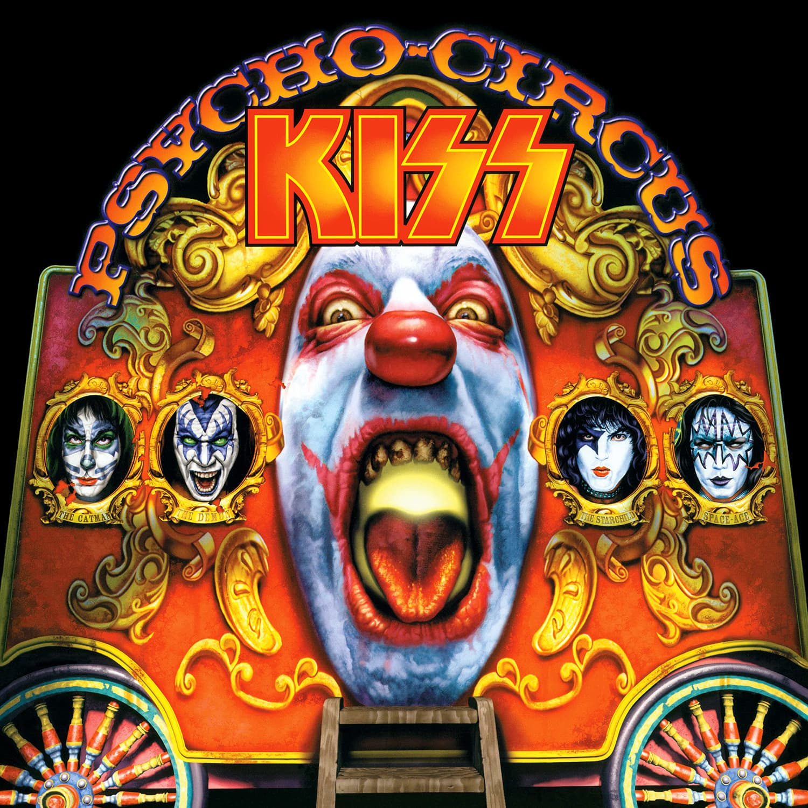Мы отметили возвращение классического состава и соединили современные элементы с духом ранних лет.
Sonic Boom (2009)
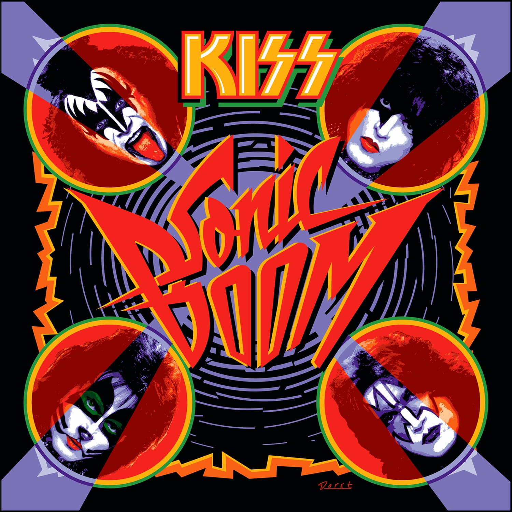Создали альбом, вдохновлённый нашими корнями — энергичный, прямой и узнаваемый.
Monster (2012)
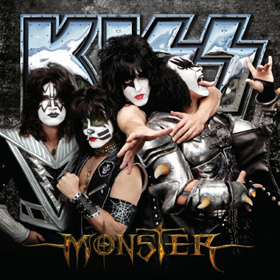Наш последний студийный альбом на сегодняшний день. Мы сделали акцент на мощном, классическом KISS-звучании, сохранив дух группы и её характер.